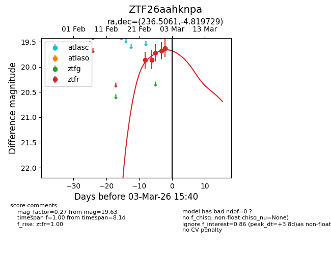
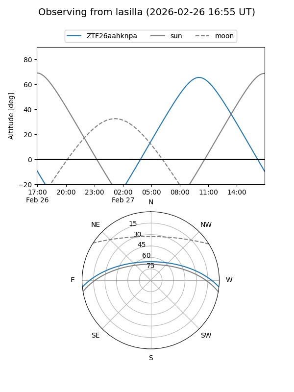
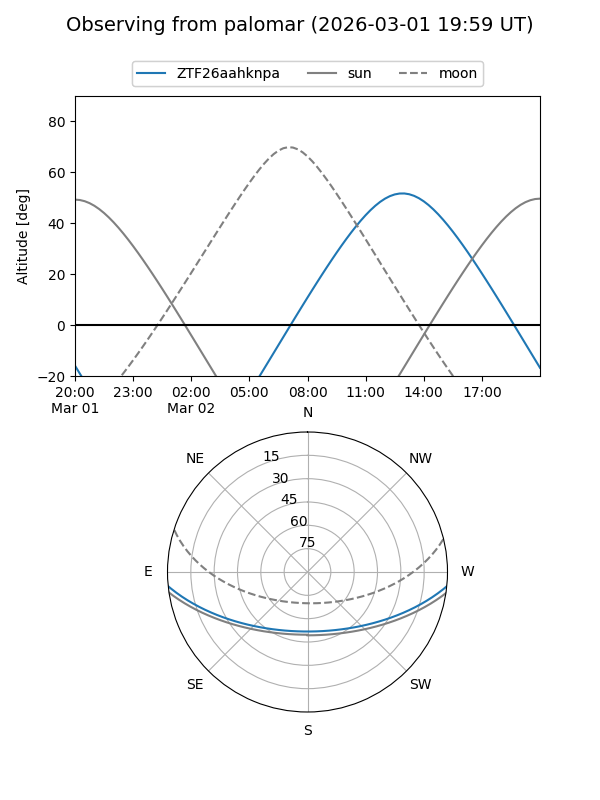
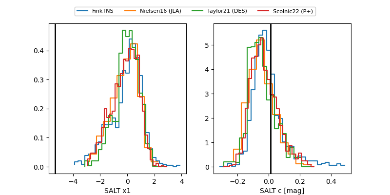

ZTF26aahknpa
Target ZTF26aahknpa at 2026-03-03 15:44
Aliases and brokers:
FINK: link
Lasair: link
ALeRCE: link
alt names
ZTF26aahknpa (ztf,fink_ztf)
Coordinates:
equatorial (ra, dec) = 236.5061,-4.81973
equatorial (HMS+DMS) = 15:46:01.46,-04:49:11.02
galactic (l, b) = (2.5285,+37.11491)
Flags:
Photometry:
last ztfr=19.63
5 ztfr detections
Lightcurve

Visibility


Additional plots
